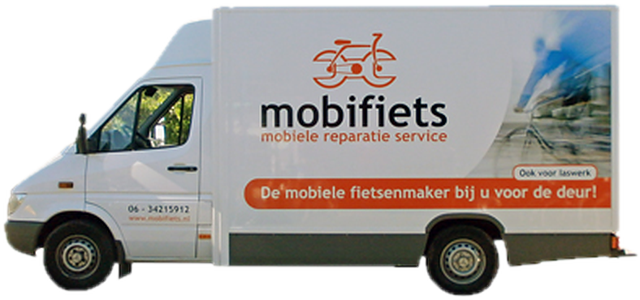
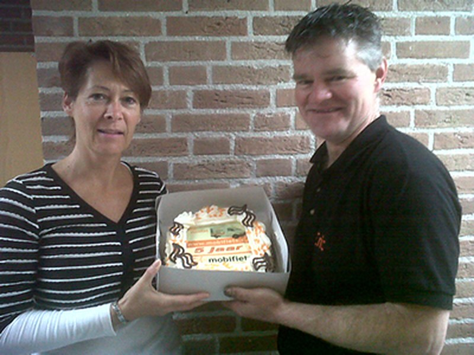

De mobiele fietsenmaker bij u voor de deur
Reparatie, onderhoud en servicebeurten aan huis, voor fietsen, e-bikes, tandems, bakfietsen en rollators. In Rijsbergen, Breda, Etten-Leur, Roosendaal en omgeving.
Vanochtend gebeld en 2 uur later stond Eric al voor de deur!Ineke, in ons gastenboek

Wij komen naar u toe
Makkelijk, tijdbesparend en voordelig. De werkplaats zit in de bus, dus u hoeft uw fiets nergens naartoe te brengen.
Reparatie
Van lekke band tot versnelling. Ook tandems, skelters, bakfietsen, duofietsen en rollators.
Onderhoud en servicebeurt
Alles nagekeken, bijgesteld en gesmeerd. Voorkomt narigheid en hoge kosten later.
Accurevisie e‑bike
Gaat de accu van uw elektrische fiets niet meer zo lang mee? Dan kunt u bij ons terecht.
Laswerk en allround monteur
Ook in te huren als allround monteur of voor laswerkzaamheden, zoals een gebroken frame.
Onderhoud voorkomt een hoop narigheid
Vaak wordt de fietsenmaker pas gebeld als de fiets niet meer bruikbaar is. Door af en toe onderhoud te laten doen, voorkomt u hoge kosten op lange termijn en onveilige situaties.
Hoe vaak? Dat hangt af van hoe intensief u fietst en wat voor fiets het is. Bij een nieuwe fiets is de eerste servicebeurt zeker belangrijk: na drie maanden zijn kabels en spaken uitgerekt en moeten ze opnieuw worden aangespannen.
Gecontroleerd en zo nodig bijgesteld
- Voorwiel
- Achterwiel
- Trapas
- Cranks
- Balhoofd
Opnieuw aangespannen
- Remkabels
- Versnellingskabels
- Spaken
- Bouten en moeren
Op veiligheid gecontroleerd
- Verlichting
- Pedaalreflectie
- Band- of spaakreflectie
- Achterreflector
Daarna worden alle bewegende delen opnieuw geolied of ingevet.
Wat klanten zeggen
Vanochtend gebeld en 2 uur later stond Eric al voor de deur!Versnelling moest nagekekeken worden en een nieuwe achterband.Kreeg goed advies en een nieuwe achterband was niet nodig,scheelt toch weer een hoop geld.Ben heel tevreden en mocht het nodig zijndan bel ik hem weer.Een echte aanrader!
Een gedeelte van mijn aluminium frame was afgebroken bij het zadel , van mijn favoriete Raleigh retro fiets die ik al 20 jaar heb, ik had het opgegeven, maar Mario van Nispen stuurde me naar Erik van Mobifiets. Die laste de stukken weer aan elkaar zodat ik weer verder kan dus ik ben superblij met zijn vakmanschap
Hoi Erik Terwijl wij in de Hoefstraat koffie/lunch pauze hadden heb jij onze tandem gerepareerd en konden wij onze fietstocht naar Bergeijk weer probleemloos en geluidloos voortzetten. Wat een geweldige service, SUPER bedankt.
Gisteren gebeld met Eric ivm probleempje met mijn elektrische fiets. Hij was in de buurt en kwam meteen langs. Vervolgens probleem snel opgelost. Top geregeld en top service. Aanrader voor een ieder.
Wat een fantastische service dit!!! 3 kapotte fietsen, hoe kom je dan bij de fietsenmaker? Je kan ze ook niet missen, dus graag op korte termijn weer terug!Dan bel je dus Eric! Komt aan huis met z'n "werkplaats" en maakt alles weer helemaal in orde. Helemaal fantastisch!
Zojuist weer 3 fietsen laten maken door Erik. Goede en snelle service tegen een lage prijs. Bedankt weer Erik!
Uit het gastenboek van Mobifiets.
Duidelijke tarieven
U betaalt voor de tijd die het werk kost, plus de onderdelen. Vooraf weten wat het kost? Stuur gerust een berichtje.
Reparatie en onderhoud aan huis
Materialen
De kosten van onderdelen verschillen per fiets. Vraag het Eric gerust vooraf via 06 342 15 912.

Al jaren een begrip in Rijsbergen
Mobifiets is de mobiele fietsenmaker van Eric uit Rijsbergen. Al sinds jaar en dag zijn wij de oplossing voor de reparatie van fietsen, rollators, tandems, skelters, bakfietsen en duofietsen.
De bus is een rijdende werkplaats, dus uw fiets wordt ter plekke gemaakt: thuis, of zelfs onderweg tijdens een fietstocht.
Werkgebied: Rijsbergen, Breda, Etten-Leur, Roosendaal, Zundert, Bergen op Zoom, Effen, Schijf, Nispen, Sprundel, St. Willebrord en Rucphen.
Afspraak maken
Het liefst via WhatsApp. Stuur gerust een foto van het probleem mee, dan weet Eric meteen wat hij mee moet nemen.
Direct contact
Bellen of appen kan op hetzelfde nummer.